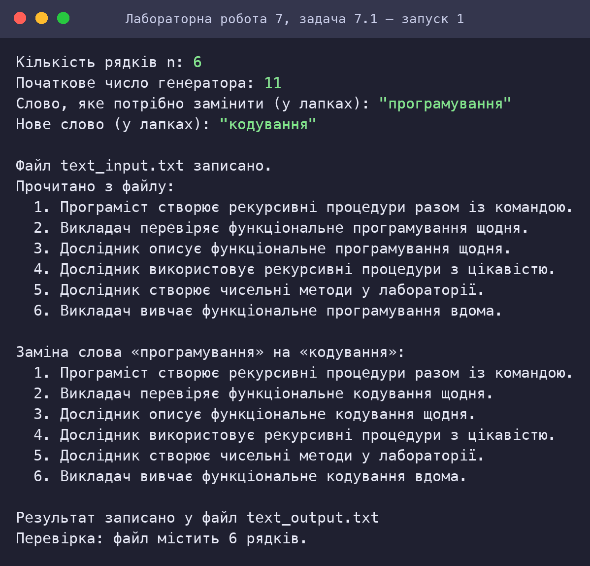
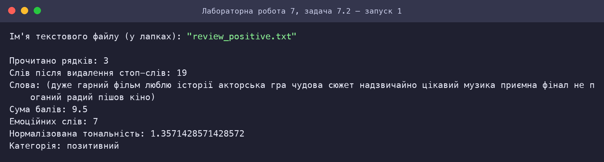
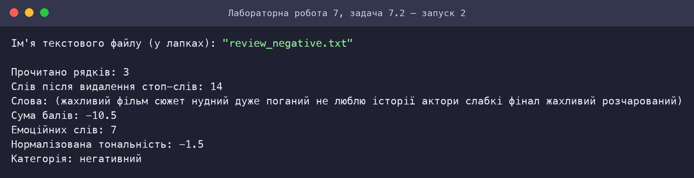
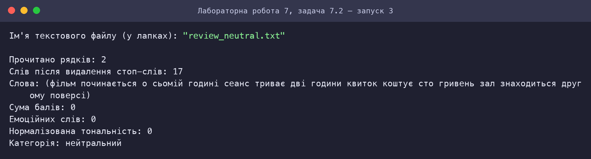
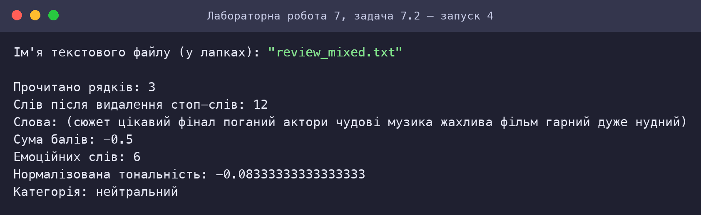

Скріншот роботи та результату
Знімки консолі відтворюють роботу програм: запуск виконано в інтерпретаторі Guile 3.0 (R5RS-сумісний); введені користувачем значення виділено зеленим. Для кожного запуску наведено умови та результат.
Задача 7.1: Текстові файли: заміна слова
Запуск 1: 6 рядків, заміна «програмування» → «кодування»

Задача 7.2: Тональність тексту
Запуск 1: Позитивний відгук

Запуск 2: Негативний відгук

Запуск 3: Нейтральний текст

Запуск 4: Змішаний відгук
